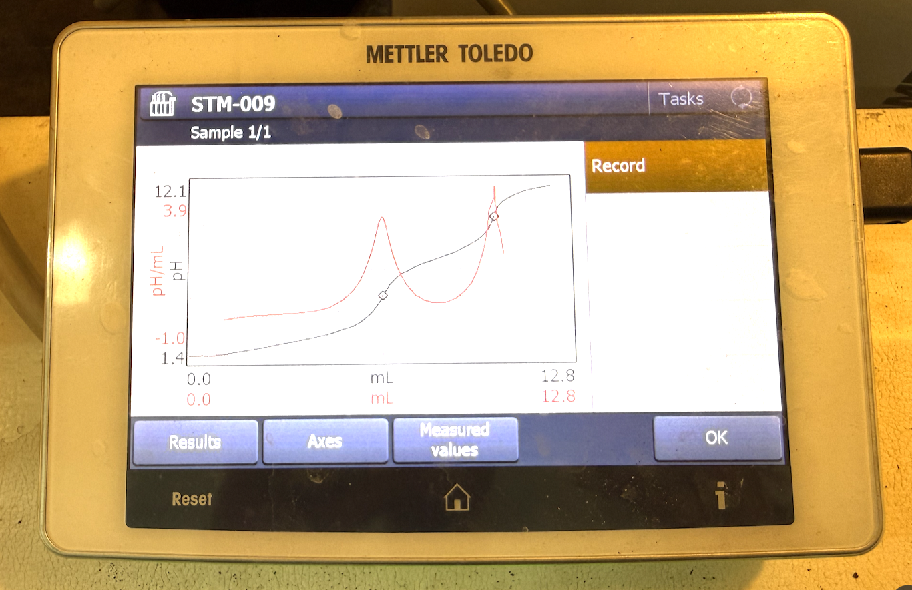
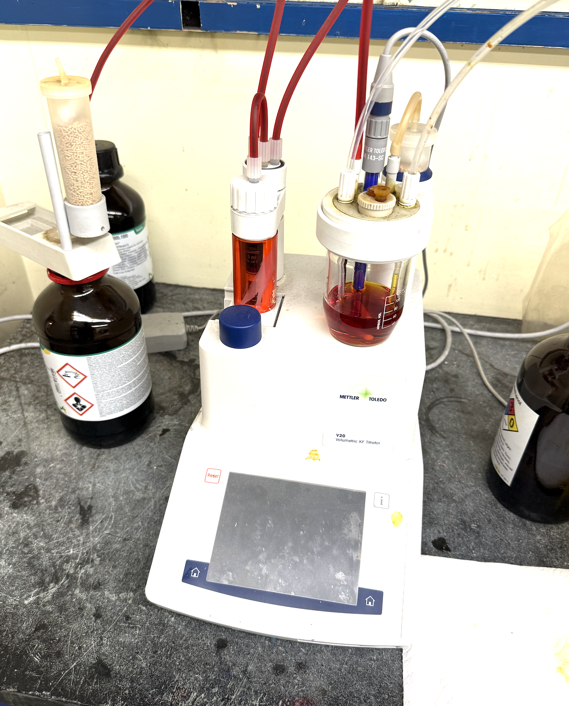

04.2.10
A titration works by using a titrant, a solution of known concentration, that reacts with a sample to determine the sample's concentration. In a basic acid/base titration, if you have an acidic solution and need to find its acid value, you titrate it with a base until no acid remains. The presence of acid is measured using a pH probe. As the titrant is added, the pH does not change drastically at first — those are the flat parts of the titration curve — because acid is still present. As the acid gets eliminated, the pH shifts sharply, creating a near-vertical line on the curve. The most vertical point on that curve is the endpoint, and that endpoint drives all of the calculations.
04.2.11
Titrations were central to my work throughout the internship. I performed hydroxyl value titrations to obtain concentration data, ran hand titrations, used the Karl Fischer titrator, and worked with other machine-based titration methods. Early on, I used titrations extensively during my Phosphate Ester research, creating different solvent combinations and titrating each one to find a clear solution. I normalized titrants using Potassium Hydrogen Phthalate, worked through acid value equations, and eventually wrote a full procedure so other chemists in the lab could replicate my method accurately.
04.2.12

Titration 1

Titration 2